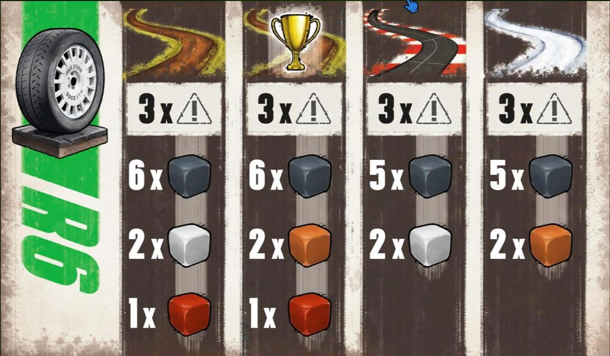

Rallymandirt
Board Game Arena 官方规则文档

Rounds
A game of Rallyman: DIRT is made up of rounds with each player getting one turn per round.
The Start
The start of each rally stage is unique in that, as this is a time trial race, players do not all begin the stage at the same time. Instead, their departure is staggered with each player playing one additional round before the next one enters the track.
In a four player game, the starting Rounds of a Stage would therefore be:
- Player 1 starts their first turn.
- Player 1 takes their second turn, then Player 2 starts their first turn.
- Player 1 takes their third turn, Player 2 takes their second turn and Player 3 starts their first turn.
- Player 1 takes their fourth turn, Player 2 takes their third turn, Player 3 takes their second turn and Player 4 starts their first turn.
When starting the stage, players place their car in the space behind the Starting Line and begin in Gear 0.
Order of Play
At the beginning of each round, you must first determine the order of play.
Order of play at the start of each round is determined by speed, then by the position of each car in case of a draw.
DISTANCE > SPEED > POSITION
- Distance: The car in the space whose front edge is furthest along the track goes first.
- Speed: If two cars are of equal distance along the track, the car in the highest Gear goes first.
- Position: In case of a draw in terms of distance and speed, the car situated on the inside lane of the current or next corner plays first. A “corner” is a section of track with speed limitations.
The Turn
Once order of play has been established, each player takes their turn one after the other.
During their turn a player will do the following:
- Choose your dice.
- Roll your dice and move your car.
Choose your dice
During their turn, players will use dice to accelerate, brake, and coast their way around the track. Each black number die represents a gear. With each move you make, may go up or down one gear (or stay the same with an orange/white die). You must always be moving forward. Each die may only be used once per turn.
The Dice
Some dice are safer than others: The white coast dice along with 1 and 2 gear only have one caution /!\ symbol on them, while the other dice all have two /!\.
- Gear: The Black dice are used to accelerate or decelerate progressively.
- Coasting: Orange 'leader' and White 'coast' dice let you stay in the same gear. Only the first player each round uses the orange dice.
- Brake: You can jump down extra gears by adding a red 'brake' die to the space moved. Each red die lets you skip a gear. For example, you could go from 6th to 4th by rolling brake+4. In this way you can move further on one turn, or end a turn in a higher gear.
- Boost:Similarly, the green 'boost' die (available in R5 races) lets you skip a gear upwards.Not currently implemented
| Gravel | Gravel (Leader) | Asphalt | Snow | |
|---|---|---|---|---|
| LOC | 3/!\ | 3/!\ | 3/!\ | 3/!\ |
| Gear | 6 | 6 | 5 | 5 |
| Coast | 2 | 2 (orange) | 2 | 2 (orange) |
| Brake | 1 | 1 |
Corners
Corner spaces are identified by the presence of speed restrictions (the circled numbers) along with the absence of a dividing line between the inside and outside lane. Exceed this number and you will lose control!
There are two ways to tackle a corner which defines how many spaces it is made up of and the speed limitation you’ll have to adhere to:
- Cutting through the inside lane: This path is shorter but requires a lower Gear. When taking the corner this way, you’ll have to adhere to the speed limit on the inside of the corner.
- Drifting through the outside lane: This path is longer but allows you to maintain a higher Gear. When taking the corner this way, you’ll have to adhere to the speed limits on the outside of the corner. Drifting cars are turned perpendicular to the track.
Drivers must decide how to tackle each corner as they enter it and cannot change methods mid corner.
Some tiles have two corners adjacent to one another. These are considered separate and you may change methods when going from one to the other.
Sliding
On some corners, Drivers can perform a Slide to start their turns early and/or end them late. This can give them more opportunities to control their speed and distance.
Some spaces adjacent to corners are intersected by a dotted line. These spaces can either be entered normally or a car can Slide into them.
When Sliding into these spaces a car effectively counts the zone as two spaces (separated by the dotted line) spanning the width of the track. Sliding cars are turned perpendicular to the track to indicate this maneuver. Players must decide whether they wish to slide into these spaces or enter them normally, they cannot change methods once they have entered.
Shortcut
Marked by the Shortcut symbol ( . These spaces can be moved into when you decide to cut a corner to save time. The number inside the Shortcut symbol is a speed limit, indicating the highest Gear a player can be in whilst occupying this space.
Players may enter or leave a Shortcut space from or to any space connected to them except Corner spaces. However, taking your car off the road can have serious consequences! Any time you enter a Shortcut space, draw 1 Damage token from the Damage token bag. Flip the token over to its “Shortcut” side which shows the Shortcut symbol in the top left corner.
- OK!: no damage
- Coast Die Damage: The number of Coast dice a player may use each turn is reduced by one for each of these tokens present on their Dashboard. This takes effect at the start of the player's next turn.
- – 1: You spray stones and mud onto the track! You are not affected, but any drivers coming up behind you will have to suffer the consequences. The maximum speed limit for all Corner spaces on this tile is reduced by 1. These tokens can stack, meaning that parts or all of the corner can eventually be made unusable. These tokens do not affect the speed limit of the Shortcut.
You may Slide into and out of a Shortcut from and to any Slide space connected to it.
Jump
Marked by a Chevron over a number.
When planning out your trajectory, place your dice as normal.
- If the die you place onto a Jump space is a lower Gear than the one shown, it counts as a normal space and has no special effect.
- If the die you place on a Jump space is the same Gear as the one shown, you’ll gain some air! Move the die you placed onto the Jump one space forward. You can move the die directly forward or diagonally.
- If the die you place onto a Jump space is one Gear higher than the one shown, you’ll gain even more air! Move the die forward 2 spaces. You may ignore any obstacles or other cars present on intervening spaces. However, if this die results in a /!\ when rolled (one by one or Flat Out) you suffer an immediate Loss on Control on the space where you land.
- If the die you place onto a Jump space is two or more Gears higher than the one shown, you’ll gain too much air! Follow the rules as above, moving the die 2 spaces, but you suffer an immediate Loss of Control on the space where you land.
- You may not land in spaces occupied by obstacles or other cars. If a Jump would force you to land on an obstacle or other car, you may not perform the Jump. You may land in a corner space in the lane of your choice.
Water Hazard
Marked by two wavy symbols on the track.
To move through a Water Hazard, you must either use a Coast die or the Gear 1 die. You cannot use a Gear 1 die in collaboration with a Brake die. If not, your movement ends immediately in your current Gear.
Overtaking
To enter a space adjacent to another player’s car, you must use a Gear die equal to or higher than the current Gear of the opponent’s car. Once your car is beside theirs, the rest of their movement can be at any speed.
You may overtake by moving diagonally between two cars.
Shortcuts count as adjacent to any space connected to them except Corner spaces.
Other Cars in Corners
If a car is positioned on a corner, another vehicle may only enter that corner if they use the same method, i.e via the same lane. They may then follow that car into the corner but cannot enter their space or overtake them.
Other cars performing a slide
If a car is performing a Slide, another vehicle may only enter those spaces if they use the same method. They may then follow that car into the Slide but cannot enter their space or overtake them.
Rolling Your Dice and Moving
Once you have planned your turn, you will roll your dice, either all at once (Flat Out) or one at a time. But be careful: Meet or exceed the safe number of caution symbols (generally three), and you will lose control!
Flat out: All the dice at once
This is the risky but brave choice: Roll your dice, and hope you get lucky. If you roll safely, you will get some second tokens for your trouble: one per gear, coast or leader die (not brake) you rolled. These will come in handy later! See the damage table below to see how risky this is.
One at a time
Sometimes you need to play it safe. You can roll your dice one at a time, and stop at any time. This way you can stop if you are at risk of losing control.
Using Second Tokens: While you are rolling your dice one at a time, you may find that you are at risk of losing control. You can spend the second tokens you earned earlier to secure your dice. Instead of rolling them you guarantee a safe result. But each die protected in a turn has a higher cost: the first die costs one, the second another two, the third another three, etc.
Losing Control
If you meet or exceed your /!\ limit, you will lose control.
If you used the 'flat out' die rolling option, you can change the order and locations of the dice you rolled. You do not even have to place all of them. However, you must place your dice in a way that results in loss of control. By changing your speed and location at the moment of loss of control, you may be able to minimize any bad effects. Even if you lose control, you will still get your Second tokens.
End of the turn
A player’s turn ends when any of the following things happen:
- They have finished their move action.
- They are blocked. (Could someone with experience, or the rulebook, elaborate on being blocked?)
- They suffer a Loss of Control.
If a player has finished their movement or is blocked
The player takes a Time card corresponding to their current Gear (the last Gear die they rolled) and places it in front of them. If they only rolled Coast (white/orange) dice their turn, they take the same Time card this turn as the one already on top of their pile.
| Gear | Seconds |
|---|---|
| 1 | 50 |
| 2 | 40 |
| 3 | 30 |
| 4 | 20 |
| 5 | 15 |
| 6 | 10 |
Time cards dictate how many seconds you add to your overall time. The higher the Gear, the lower the number of seconds added to your time!
If a player suffers a Loss of Control
The player takes a Time card corresponding to the Gear they were in when they suffered the Loss of Control from the top of the deck, flipping it over to the side showing “Gear 0” and placing it on top of the pile next to their Dashboard.
A Loss of Control adds more time to your total than even the lowest of Gears and means that you’ll have to drive even harder to make up for the lost time.
In addition, on the right side of the card at the top of the white strip there will be one of two icons. Depending on what icon the card shows, apply the following results
- SISU: You suffer no damage to your car and lose very little time! Leave your car in the space where the Loss of Control occurred. You start your next turn in the Gear shown on the card.(Normal Time, but Gear 0)
- Spin: 60 Seconds for the turn, but doesn’t cause any Damage. Even though it has suffered a Loss of Control, the car still counts as being on the track. Start next turn in Gear 0.
- Crash: (happens most often) 60 Seconds for the turn, and take damage based on your last gear and the Danger level of the tile the Loss of Control occurred on. The car does not count as being on the track for the purposes of
impeding other cars. Start next turn in Gear 0.
| Gear dice | Yellow | Orange | Red |
|---|---|---|---|
| 1 | 0 | 0 | 0 |
| 2 | 0 | 0 | 1 |
| 3 | 0 | 1 | 2 |
| 4 | 1 | 2 | 3 |
| 5 | 2 | 3 | 4 |
| 6 | 3 | 4 | 5 |
Damage
There are several Damage result tokens
- Gear Damage: The number of Gear dice the player may use each turn (no matter their value) is reduced by one for each of these tokens present on their Dashboard.
- Brake Damage: The number of Brake dice the player may use each turn is reduced by one for each of these tokens present on their Dashboard.
- Leader/Coast Damage: The number of Coast or Leader dice the player may use each turn is reduced by one for each of these tokens present on their Dashboard.
- Green Flag: No damage, you got lucky!